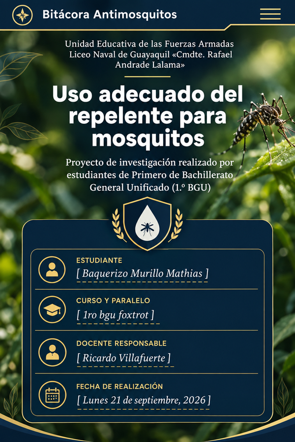

Identificamos qué dudas teníamos sobre los repelentes y las picaduras de mosquitos.
Proyecto interdisciplinario · NAVI-BIOREPEL
Uso responsable del repelente para mosquitos
Una bitácora digital sobre prevención, investigación y hábitos seguros frente a las picaduras de mosquitos.
“La prevención empieza cuando convertimos la información en un hábito.”

🦟
Unidad Educativa de las Fuerzas Armadas
Liceo Naval de Guayaquil «Cmdte. Rafael Andrade Lalama»
Liceo Naval de Guayaquil «Cmdte. Rafael Andrade Lalama»
01 · PRESENTACIÓN
¿Por qué investigar sobre este tema?
Los mosquitos forman parte del entorno cotidiano de muchas zonas tropicales. Por eso, conocer medidas de prevención puede ayudarnos a tomar decisiones más responsables en casa, en el colegio y cuando realizamos actividades al aire libre.
En este proyecto analizamos el uso del repelente desde una perspectiva educativa: qué función cumple, qué información debemos revisar en la etiqueta y qué hábitos complementarios pueden disminuir la exposición a las picaduras.
🔎
Investigar
Buscar información confiable y comparar recomendaciones de organismos de salud.
🧠
Comprender
Transformar datos técnicos en ideas claras que puedan entender otros estudiantes.
🌱
Aplicar
Promover hábitos de prevención responsables dentro de la comunidad educativa.
02 · INVESTIGACIÓN
Lo que aprendimos
1
¿Qué es un repelente?
Es un producto destinado a disminuir la probabilidad de que ciertos insectos se acerquen o piquen. Su función es preventiva y no sustituye la atención médica.
2
¿Qué debemos revisar?
La etiqueta puede indicar el ingrediente activo, concentración, instrucciones, advertencias, edad recomendada y otras condiciones de uso.
3
Aplicación responsable
Debe seguirse siempre la etiqueta del producto. Se debe evitar el contacto con ojos y boca y no aplicar sobre piel irritada o lesionada.
4
Prevención complementaria
También ayuda reducir lugares donde se acumule agua, usar ropa que cubra la piel y mantener medidas de protección adecuadas en exteriores.
03 · PROCESO
De la pregunta al producto final
Consultamos fuentes institucionales y organizamos la información relevante para el proyecto.
Comparamos recomendaciones y seleccionamos las ideas que podían convertirse en mensajes educativos.
Convertimos los resultados en una bitácora digital sencilla, visual y fácil de recorrer.
04 · PRODUCTO
Recurso educativo digital
El producto final es este blog, creado para reunir en un solo lugar la investigación y comunicarla de manera sencilla.
📌
Objetivo
Explicar hábitos básicos de prevención relacionados con las picaduras de mosquitos.
👥
Público
Estudiantes, familias y miembros de la comunidad educativa.
💻
Formato
Blog web adaptable a computadores, tablets y celulares.
05 · CONCLUSIONES
¿Qué nos llevamos de la investigación?
- La prevención requiere información clara y hábitos constantes.
- Leer las indicaciones de un producto es parte fundamental de su uso responsable.
- El repelente es una medida preventiva y debe combinarse con otras acciones para reducir la exposición a mosquitos.
- Investigar fuentes confiables ayuda a distinguir recomendaciones respaldadas de consejos sin fundamento.
- El trabajo interdisciplinario permite relacionar ciencia, comunicación y tecnología en un mismo proyecto.
Reflexión final: una pequeña acción de prevención puede tener más sentido cuando entendemos por qué la hacemos y cómo realizarla responsablemente.